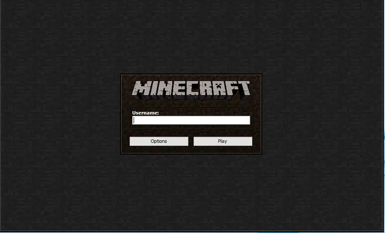
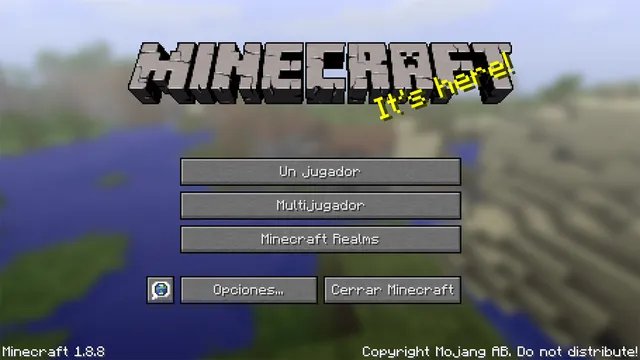
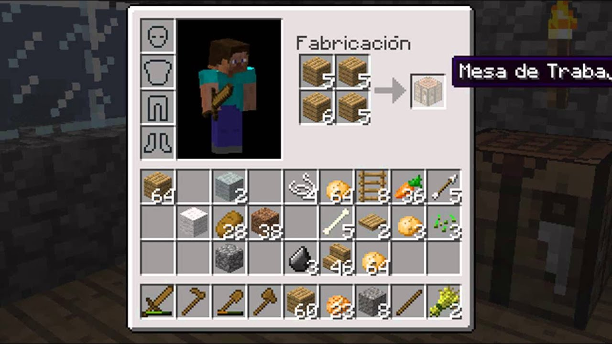
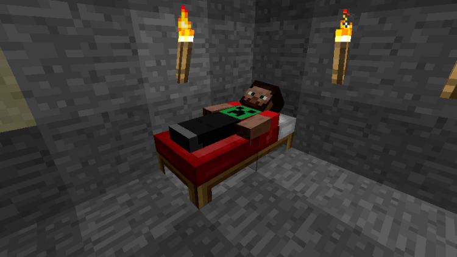
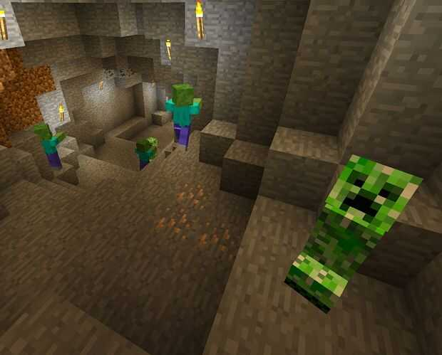

Tanto si ya has decidido comprar Minecraft como si vas a jugar a la demo, el primer paso de esta guía es crear una cuenta de Mojang, compañía desarrolladora del juego. Puedes hacerlo directamente desde su página web con un email en activo.
Una vez recibas el correo de confirmación, haz click en el enlace adjunto y ve directamente a la ventana de creación de cuenta. En ella tienes que elegir el nombre de usuario que quieres utilizar y la contraseña de tu cuenta.
A continuación, el servidor te dirige hacia los enlaces para descargar Minecraft a tu ordenador -si juegas desde este soporte- donde encontrarás los archivos de instalación del launcher. Descarga el que corresponda a tu sistema operativo y ejecútalo una vez que hayas terminado. Dentro de la ventana que se abre, puedes crear perfiles adicionales en el botón que aparece en la zona inferior izquierda. Para lanzar el juego, pulsa sobre el botón Jugar.
Siempre hay varias opciones, por lo que son necesarios varios consejos antes de lanzarte a jugar. Primero ves tres modos distintos: un jugador, multijugador y realms. La mejor forma de dar tus primeros pasos es hacerlo como un único jugador, así evitarás tener que lidiar contra otros usuarios más expertos. Si seleccionas este modo, aparecerán varios más que puedes elegir.
Como aún no has creado ningún mundo, tendrás que elegir Crear nuevo mundo. A dicho escenario debes ponerle un nombre e iniciar la partida pulsando sobre el botón Modo Creativo, también conocido como Modo Dios. De lo contrario la iniciarás en supervivencia.
Esta forma es la mejor para iniciarte en Minecraft a modo de tutorial de autoaprendizaje, ya que no sufres ataques de NPC hostiles y puedes moverte libremente por el mapa, no es ningún truco. El resto de opciones adicionales no son recomendables en tus primeras partidas.
Si quieres, una vez que te hayas hecho con los controles puedes volver a esta pantalla y jugar en Supervivencia. Así probarás el mundo que has creado en el Modo Creativo o directamente generar uno sirviéndote de su algoritmo.

Aprende los controles y las funciones. Sigue los pasos a continuación para ver una lista completa de los controles para la versión de Minecraft que estés jugando:

Los recursos iniciales. Minecraft es un juego que consiste principalmente en la recolección y utilización de recursos del mundo a tu alrededor. Al principio, necesitarás recolectar inmediatamente los siguientes recursos:
Crea una casa temporal. Utiliza tierra, grava y arena para construir cuatro paredes y un techo. De esta manera, te asegurarás de tener un lugar en el cual ocultarte cuando llegue la noche. Utiliza tierra para la casa, pues la lana es mucho más útil para hacer herramientas.
Crea una mesa de trabajo. En Minecraft, las mesas de trabajo pueden servir para hacer casi cualquier cosa. Puedes crear una desde tu inventario.
Haz una cama. Las camas tienen dos objetivos: te permitirán sobrevivir a la noche peligrosa al poder dormir, y podrás usar la última en la que dormiste como un punto de reaparición. Esto significa que, si mueres, no aparecerás al principio del mundo, sino más bien al lado de tu cama.
Es sumamente importante hacer una cama lo antes posible, sobre todo si el refugio que construiste se encuentra relativamente lejos del punto donde comenzaste el juego.

Duerme en tu cama tan pronto como llegue la noche. Como se mencionó previamente, al dormir podrás evitar el ciclo nocturno, momento en el cual aparecen los monstruos de Minecraft (conocidos como “mobs” en el juego).
Si no lograste hacer una cama antes del anochecer, siéntate dentro de tu refugio hasta que vuelva a salir el sol.
Crea algunas herramientas. herramientas son la piedra angular para tener un juego exitoso en Minecraft, pues con ellas podrás obtener y crear armas, herramientas y armaduras de calidad superior en las etapas más avanzadas del juego. Asegúrate de comenzar a crear las siguientes herramientas:
Infórmate sobre los diferentes tipos de mobs. Si bien podrías verte tentado a escapar de cada animal y monstruo que te cruces, la mayoría de ellos no te atacarán a menos que tú lo hagas primero:

Y eso seria todo, esperamos que esta pequeña guia te sirva de apoyo para tener una mejor panorama del juego, conforme la marcha apredenras mucho más y si tienes alguna duda sobre un algun tema de minecraft, no olvides darle una revisida a nuestra pagina principal. DIVIERTETE!!